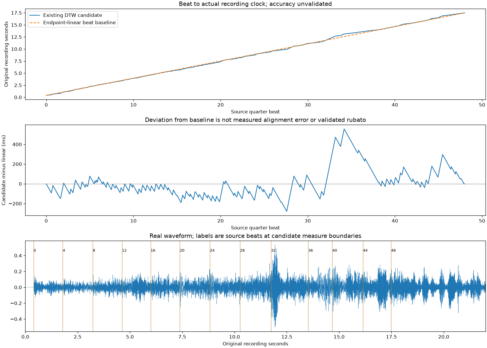

R/R RIBBON ROOM실험 기록 · 이전 결과를 보존한 검토 화면입니다. 새 그래픽 작업은 작업실에서 이어갑니다.
다른 실험 보기
B3.2 · beat 좌표 매핑 · 검토 대기
악보의 박을 실제 연주 시간으로 연결하기.
멘델스존 Op.80 I악장 · Musopen String Quartet. 기존 자동 대응을 재사용하며 악보 0–48 quarter beats와 원본 녹음 초를 연결합니다.
방식을 바꾸면 같은 재생 위치의 beat 표시가 바뀝니다. 아래 beat를 움직이거나 표의 이동 버튼을 누르면 선택한 방식의 시간으로 이동합니다.

beat 단위는 4분음표입니다. JSON은 원본/발췌 악보 초·beat와 원본/발췌 연주 초를 따로 보존합니다. 이번 음원 발췌 시작은 원본 0초이며 앞 무음도 유지합니다. 대응 범위 밖의 시간을 외삽하지 않습니다.
직선과의 차이는 실제 정렬 오차나 검증된 루바토가 아닙니다. DTW 원시 경로를 평활화하거나 다시 추정하지 않았으며, 기존 후보 끝의 짧은 외삽 가정은 그대로 기록했습니다. 독립 공격음 검수·청취 정확도는 대기입니다.
beat 정렬 JSON · 전체 박별 비교 · 검사 · 출처 · 보고서